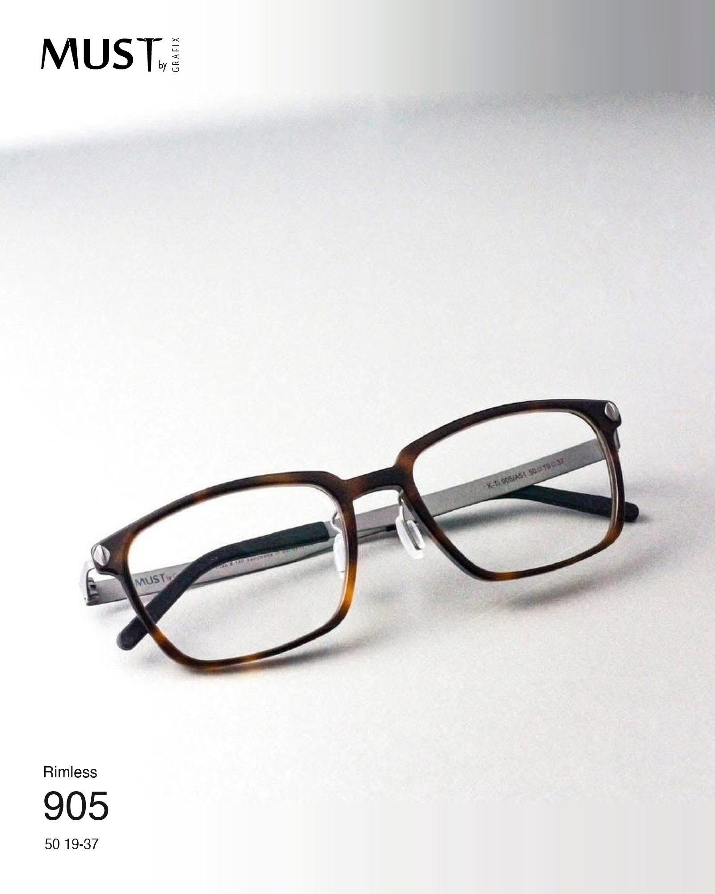

COLLECTIONS / K‑TI
K‑Ti
Fine acetate frames with quiet colour, balanced proportions and a clear, considered presence.
- Mazzucchelli
acetateCombined with titanium for comfort and style. - LightweightSimple, versatile design with a striking presence.
